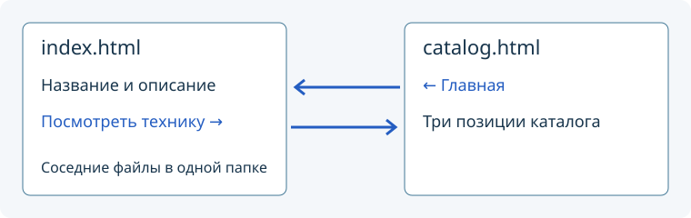
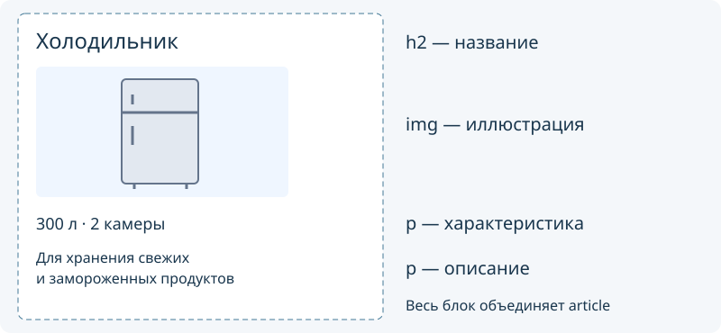

Разметка главной страницы и каталога своего приложения
Что получится
Продолжаем веб-проект, начатый на предыдущих занятиях. На этой паре у приложения появятся две связанные страницы: главная и каталог из трёх позиций. Основное содержание располагается сверху вниз, а ссылки меню — горизонтально с помощью CSS. На узком экране меню переносится на следующую строку.
Текущий набор индивидуальных заданий — найдите свой прежний номер. Названия, описания, характеристики и готовые изображения берите из своего листа. Ниже показан учебный вариант 00 «Техника дома». Он не назначается студентам: все выполняют свой вариант, заменяя данные примера своими.
Обязательный результат: прежняя главная index.html, отдельный catalog.html с тремя полными позициями своего варианта, рабочие переходы в обе стороны, общий style.css, горизонтальное меню с переносом и изображения из папки images. Дополнительные задания ниже выполняются после этого минимума.
Как работать самостоятельно
Читайте по одному шагу: определите файл и место изменения → внесите небольшое изменение → сохраните → обновите браузер → выполните самопроверку. После успешной проверки переходите дальше без подтверждения преподавателя. Если результат уже есть, проверьте его и пропустите повторное создание.
Первая позиция дана с примером, вторая — со структурой, третью вы соберёте самостоятельно. Не вставляйте все фрагменты подряд: HTML меняет содержание страниц, CSS — их оформление. Перед использованием чужой подсказки определите, к какому файлу она относится, и проверьте результат одного изменения. Имена и тексты должны соответствовать вашему варианту.
Если что-то не работает, сначала используйте блок «Если не получилось» нужного шага и общую таблицу ошибок в конце. Если исправить не удалось, обращайтесь с конкретным вопросом: какой файл открыт, что ожидали, что получилось и что уже проверили. Обращаться после каждого выполненного шага не требуется. Преподавателю показывают итог по сценарию в конце статьи.
Откройте прежний проект
Откройте index.html в редакторе и браузере. Проверьте название приложения, текст, картинку и подключение style.css. Измените одно слово, сохраните файл и обновите браузер: изменение должно появиться.
Если страницы ещё нет, восстановите её по инструкции первой страницы. Если не подключён CSS, используйте объяснение подключения стилей. Сначала добейтесь открывающейся страницы; новый проект с другим номером создавать не нужно.
Подготовьте файлы
В прежней папке создайте новый файл catalog.html. Существующие index.html, style.css и изображения сохраните.
VariantNN-web/
index.html
catalog.html
style.css
images/
Все HTML-файлы лежат рядом, поэтому ссылка на каталог будет catalog.html, а на картинку — images/имя-файла.png или images/имя-файла.svg — с настоящим расширением файла.
Проверка: редактор показывает расширение .html, а не .html.txt. Если расширения скрыты, включите их показ в проводнике. При сохранении через Блокнот выберите «Все файлы» и кодировку UTF-8.
Подготовьте каталог из прежней страницы
Чтобы применить уже изученную разметку, используйте копию своего index.html под именем catalog.html. Главную сохраните отдельным файлом. Если уже создали пустой каталог, перенесите в него разметку главной; не добавляйте второй html внутрь первого.
В редакторе откройте именно catalog.html и измените его по таблице:
| Место | Что сделать | Результат для примера 00 |
|---|---|---|
head, элемент title |
Подписать вкладку каталога | Каталог — Техника дома · V00 |
head |
Сохранить подключение style.css, UTF-8 и viewport из главной |
Цвета общие; браузер знает ширину экрана |
header |
Сохранить название приложения | Техника дома · V00 |
Только содержимое между <main> и </main> |
Заменить прежние блоки главной одним h1 и поясняющим абзацем |
Каталог техники; Три товара с основными характеристиками |
footer |
Сохранить подпись своего варианта | Учебный прототип · Вариант 00 |
Не оставляйте в каталоге скопированные старые позиции главной: ниже вы создадите три позиции по полным данным листа. Если в прежнем файле ещё нет header, main, footer, сначала оформите их по статье пары 12, затем вернитесь к таблице.
Самопроверка: в браузере открывается catalog.html, вкладка и единственный h1 называют каталог, прежняя главная в index.html сохранилась. Товаров пока может не быть.
Если не получилось: проверьте имя открытого файла в редакторе и адрес браузера. Если исчезла главная, вероятно, вы редактируете index.html; восстановите её собственное содержание по листу варианта. Если пропали стили, сравните подключение в head двух страниц.
Свяжите две страницы
В обоих файлах, index.html и catalog.html, внутри header, после названия приложения добавьте меню. Если nav уже есть, измените его, не создавайте дубликат:
<nav>
<a href="index.html">Главная</a>
<a href="catalog.html">Каталог</a>
</nav>
nav объединяет ссылки для переходов; href задаёт файл назначения. Горизонтальное расположение появится после добавления CSS ниже.
На главной найдите прежнюю ссылку к миникаталогу href="#catalog". Замените только адрес на href="catalog.html", сохранив свою надпись. Старый список из двух пунктов можно оставить как краткий обзор; полный каталог будет на отдельной странице.
<a href="catalog.html">Посмотреть технику</a>

#catalog ищет место внутри текущей страницы. catalog.html открывает соседний файл. Регистр букв и написание имени должны совпадать.
Проверка: нажмите ссылку на каталог, затем «Главная». В адресе браузера меняется имя файла, обе страницы открываются без ошибки.
Если не получилось: имена в href сравните с файлами в проводнике, включая расширения. Файлы должны находиться в одной папке. Если браузер только прокручивает главную, у ссылки остался адрес с #.
Добавьте первую позицию
В catalog.html, внутри main, после поясняющего абзаца вставьте:
<article>
<h2>Холодильник</h2>
<img src="images/fridge.svg" alt="Холодильник с двумя камерами" width="280">
<p>300 л · 2 камеры</p>
<p>Для хранения свежих и замороженных продуктов</p>
</article>

article объединяет отдельную законченную позицию. Внутри неё h2 называет позицию, первый абзац содержит характеристику, второй — описание. Рамка на схеме показывает группу элементов; тег article сам её не рисует.
Возьмите первую строку своего каталога. Файл из последней колонки сохраните в images/ с указанным именем. В alt коротко опишите изображение; не оставляйте описание холодильника, если у вас другая тематика.
Проверка: видны четыре элемента сверху вниз. Если вместо картинки текст, проверьте файл и путь в src.
Если не получилось: имя в src должно совпадать с реальным файлом в images, включая .png или .svg. Проверьте закрывающий </article>: следующие позиции должны находиться снаружи первого блока.
Соберите вторую позицию по структуре
Файл: catalog.html. Место: после первого </article>, перед </main>. Используйте вторую строку каталога своего листа. Готового блока здесь нет; соберите его по таблице:
| Порядок | Элемент | Данные |
|---|---|---|
| Начало | Открывающий article |
Отдельная позиция, соседняя с первой |
| 1 | h2 |
Название второй позиции |
| 2 | img |
Её файл в images, содержательный alt и ширина показа |
| 3 | Первый p |
Характеристика |
| 4 | Второй p |
Описание |
| Конец | Закрывающий article |
Граница второй позиции |
Самопроверка: появились две разные позиции, у каждой свои изображение и тексты. Для примера 00 вторая — стиральная машина, а не ещё один холодильник.
Если не получилось: сравните только структуру с первым блоком. Не заменяйте весь файл готовой страницей; найдите отсутствующий элемент или незакрытый тег.
Добавьте третью позицию самостоятельно
Файл: catalog.html, после второго article и до </main>. По третьей строке своего листа создайте ещё одну полную позицию. Способ уже известен; выберите нужные элементы и проверьте данные без нового образца кода.
Самопроверка: один h1, три h2 и три соседних article; в каждой позиции название, изображение, характеристика и описание. Всё совпадает со строками своего листа и идёт в их порядке.
Если не получилось: пересчитайте открывающие и закрывающие теги article; каждый блок должен закончиться до начала следующего. Если тексты одинаковые, сверяйте позиции со своим листом по одной строке.
Используйте общий CSS
В обеих страницах внутри head должно быть одно подключение:
<link rel="stylesheet" href="style.css">
В конец существующего style.css добавьте:
img {
max-width: 100%;
height: auto;
}
max-width: 100% ограничивает изображение шириной содержащего его блока; height: auto сохраняет пропорции. Атрибут width="280" в примере задаёт исходную ширину показа, а правило помогает картинке поместиться в узком окне.
Сохраните файл. Обновите обе страницы: прежние цвета текста и фона должны применяться к обеим. Уменьшите окно — картинки не должны растягиваться или выходить за границы содержимого.
Если не получилось: правило должно находиться в style.css, вне других фигурных скобок. В обеих страницах проверьте путь href="style.css". Сначала сохраните CSS, затем обновите браузер.
Оформите горизонтальное меню
Меню оформляется тремя отдельными правилами в style.css, после уже существующих правил. Добавляйте их последовательно и после каждого смотрите результат. Если правило с таким селектором уже есть, дополните его вместо создания второй копии.
Сначала расположите ссылки в ряд:
nav {
display: flex;
flex-wrap: wrap;
gap: 12px;
margin-bottom: 20px;
}
display: flex располагает ссылки внутри nav в ряд. gap задаёт расстояние между ними, а flex-wrap: wrap разрешает перенос, когда места мало. margin-bottom отделяет меню от следующего блока. Проверьте: две ссылки стоят рядом и между ними появился промежуток.
Затем оформите сами ссылки:
nav a {
display: block;
padding: 8px 12px;
color: inherit;
border: 1px solid currentColor;
border-radius: 6px;
text-decoration: none;
}
Селектор nav a выбирает только ссылки внутри меню. padding увеличивает область нажатия, border рисует рамку, border-radius скругляет углы. color: inherit берёт цвет текста у родителя, а currentColor использует его для рамки. Проверьте: у ссылок меню появились рамки и внутренние отступы; обычная ссылка в тексте не получила такую рамку.
Наконец добавьте видимую реакцию на мышь и клавиатуру:
nav a:hover,
nav a:focus-visible {
text-decoration: underline;
}
При наведении мыши (:hover) и фокусе с клавиатуры (:focus-visible) появляется подчёркивание. Стандартную рамку фокуса браузера оставьте: она помогает видеть, какая ссылка выбрана клавишей Tab.
Ожидаемый порядок ссылок:
Главная Каталог
Проверка: обновите обе страницы. В широком окне ссылки идут в один ряд; в узком при необходимости переносятся и не перекрываются. Нажмите Tab, затем Enter: выделенная ссылка должна открыть нужную страницу. Обе страницы используют одни правила из общего CSS, копировать стили в HTML не требуется.
Если не получилось: найдите nav в HTML и соответствующий селектор в CSS. Правило nav действует на контейнер меню, а nav a — на ссылки внутри него. Если рамки появились у всех ссылок страницы, проверьте, не написали ли вы только a вместо nav a.
Если результат отличается от ожидаемого
| Симптом | Что проверить самостоятельно |
|---|---|
| После сохранения ничего не изменилось | Одинаковую папку в редакторе и браузере; сохранение нужного файла; обновление страницы |
| Видны теги, а не страница | Расширение .html, а не .txt; открытие файла браузером |
| Переход не открывает страницу | Точное имя и расширение в href; расположение файлов рядом |
| Вместо изображения показан текст | Наличие файла в images, имя и расширение в src |
| CSS работает только на одной странице | Одинаковое подключение общего файла внутри head обеих страниц |
| Новое правило CSS не действует | Селектор, двоеточия, фигурные скобки и отсутствие более позднего правила с тем же свойством |
| Каталог содержит старые блоки главной | Содержимое main в каталоге; главную менять не нужно |
Исправляйте одну причину за раз, сохраняйте и повторяйте ту же проверку. Если обязательная часть ещё не готова, продолжайте её; дополнительные задания пока пропустите.
Самопроверка обязательного результата
- Откройте
index.htmlиз папки проекта, перейдите в каталог и вернитесь по ссылке. - Сверьте три позиции с листом своего варианта: названия, характеристики, описания, изображения.
- Проверьте заголовки, отсутствие вложенных
articleи подключение общего CSS. Меню на обеих страницах горизонтальное, с отступами и переносом в узком окне; ссылки доступны черезTabиEnter. - Измените одну характеристику в исходном файле, сохраните и убедитесь, что меняется только нужная позиция. Верните данные своего листа.
Сохраните всю папку проекта, включая изображения и CSS. Для быстрой самостоятельной проверки скопируйте папку в другое доступное место и откройте главную оттуда: ссылки и изображения должны работать без обращения к прежней папке.
Продолжение начинайте без промежуточного разрешения преподавателя. Следующая пара — форма своего приложения; дополнительные задания этой пары не являются условием для её начала.
Продолжение для тех, кто закончил
Выполняйте по порядку, пока есть время. После каждого задания сохраняйте работающий результат. Эти задачи не заменяют обязательный минимум и не требуют JavaScript или сервера.
1. Покажите текущую страницу в меню
На главной выделите пункт «Главная», в каталоге — «Каталог». Ссылка должна оставаться рабочей. Отличие должно быть заметно по начертанию или рамке, а не только по цвету.
Подсказка при затруднении: у соответствующей ссылки можно задать атрибут aria-current="page". В CSS селектор nav a[aria-current="page"] выбирает именно такую ссылку. Самостоятельно выберите свойства оформления. aria-current обозначает текущую страницу и помогает вспомогательным технологиям; он не заменяет видимый стиль.
Готово, если: на каждой странице выделен ровно один правильный пункт, обычные ссылки не изменились, перенос и клавиатурный фокус работают.
2. Создайте страницу первой позиции
Добавьте рядом файл item.html с подробностями первой существующей позиции. Придумайте два полезных уточнения для учебного приложения. Подключите общий CSS; сохраните название приложения, меню и подвал. Из первой позиции каталога добавьте ссылку «Подробнее», со страницы позиции — «Вернуться в каталог». Ссылка «Каталог» в её меню ведёт на каталог; обозначение текущей страницы из первого задания не переносите вслепую.
Подсказка: используйте структуру существующей страницы; заменяйте её main, а не добавляйте ещё один html. На странице подробностей свой h1, изображение и два поясняющих абзаца. Три позиции основного каталога и их исходные данные сохраните.
Готово, если: маршрут «каталог → Подробнее → каталог» работает, уточнения относятся к выбранной позиции, общий CSS применяется и изображения открываются.
3. Проведите проверку удобства
Пройдите все созданные переходы только через Tab и Enter, затем уменьшите окно примерно до ширины телефона. Найдите две проблемы и исправьте их. Если проблем не обнаружили, выполните два осмысленных улучшения и поясните их пользу, например сделайте надпись ссылки понятнее или настройте расстояние между блоками.
Готово, если: вы можете показать два конкретных изменения и объяснить, как они помогают пользователю; данные своего варианта и обязательные переходы сохранены.
Итоговый показ преподавателю
К концу пары сохраните файлы и подготовьте главную страницу в браузере, а catalog.html и style.css — в редакторе. Никаких отдельных отчётов или снимков каждого шага не требуется.
- Пройдите «главная → каталог → главная», покажите три позиции и меню в узком окне.
- По выбору преподавателя выполните одно короткое изменение: поменяйте характеристику указанной позиции либо расстояние между пунктами меню. Покажите результат и назовите файл и правило или элемент, который изменили. Затем восстановите данные листа.
- Если выполняли продолжение, покажите самый дальний законченный результат.
Работающие страницы и умение изменить свою работу проверяются отдельно. Готовый внешний код сам по себе не показывает понимание; важно найти нужное место и предсказать результат изменения.